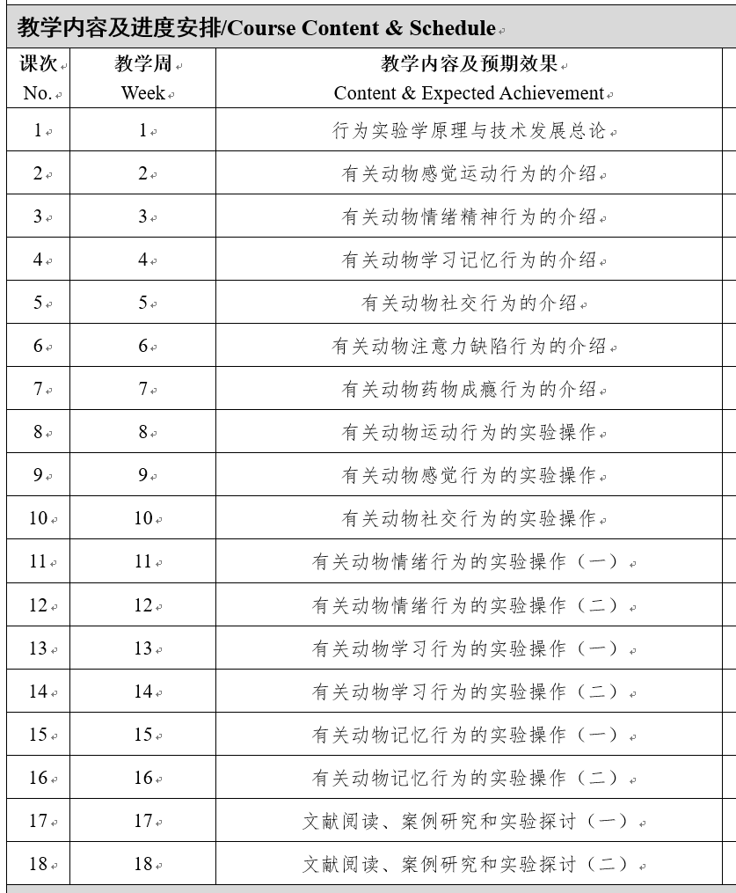
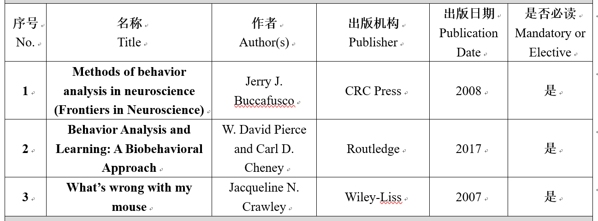

2025秋 · BIOL60047.01 · 黄倩、刘琳云
来源：复旦教务系统教学大纲，本轮使用已授权账号下载。原始正文与考核信息；去除联系方式和网页脚本，内嵌图片按原字节去重保存。
课程主要介绍啮齿类小动物行为学理论的发展以及感觉运动、学习记忆、情绪精神、社交偏好等常用行为实验的原理与设计，同时教授相关的实验操作。通过理论学习和动手实验，让学生掌握啮齿类小动物常用行为学实验的理论基础、相关的实验设计与仪器使用等相关知识。
The course mainly introduces the development of rodent behavior theory, as well as the principles and designs of commonly used behavioral experiments such as sensory motor, learning and memory, emotional and mental, and social preferences. It also teaches relevant experimental operations. Through theoretical learning and hands-on experiments, students will master the theoretical basis, experimental design, and instrument usage of commonly used behavioral experiments in rodents.
本课程旨在通过理论授课与实验操作相结合的方式，使学生掌握小动物行为实验（如：感觉运动、情绪精神、学习记忆、社交等行为）在神经生物学研究中的主要技术手段、核心仪器的原理及操作使用，了解小动物行为学的最新研究进展和成果。
采用理论教学和实验操作相结合的上课方式，使同学们较全面的掌握和了解课程教学目标。
具体教学内容和进度安排如下图所示：


| 项目 | 比例 | 评定说明 |
|---|---|---|
| 出勤Attendance | 10.0% | |
| 课堂表现Participation | 15.0% | |
| 作业/实验/实践Assignment | 35.0% | 行为实验操作 |
| 课题论文Research Paper | 10.0% | 课程期末综述 |
| 课题研讨Topic Discussion | 30.0% | 课程口头汇报 |